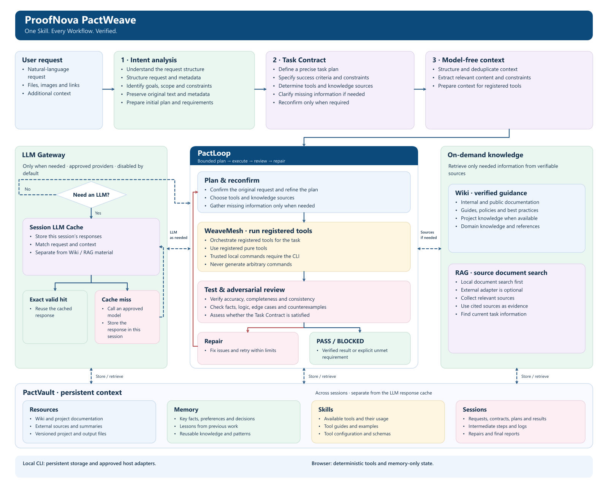

Real deterministic execution
Intent analysis, contracts, registered pure tools, bounded review, local document search and in-memory state run in your browser.
PROOFNOVA PACTWEAVE
Turn a request into a contract. Run registered tools. Keep the evidence that proves the result.
No account · No API key · No data upload · No paid calls
A result needs evidence.
HONEST BY DESIGN
Intent analysis, contracts, registered pure tools, bounded review, local document search and in-memory state run in your browser.
Disk persistence, restart recovery, trusted project commands and configured model providers require the local CLI. These are not simulated here.
A request outside registered capabilities returns BLOCKED with missing inputs or prerequisites. Natural language is never turned into arbitrary shell commands.
LIVE WORKSPACE
Use the sample, inspect its contract, then change a criterion to see a real failure.
Ready. Nothing has executed yet.
—
—
—
—
—
—
—
—
—
ONE PUBLIC SKILL / PACTWEAVE
Knowledge and models are optional branches inside the loop, not mandatory gates.

Preserve original bytes, find missing inputs and separate assumptions from confirmed constraints.
Acceptance criteria and permission boundaries survive every plan and repair.
Execute only registered capabilities. Retrieve knowledge or request a configured model only when needed.
Critical failures cannot be averaged away. Keep evidence and explicit PASS or BLOCKED outcomes.